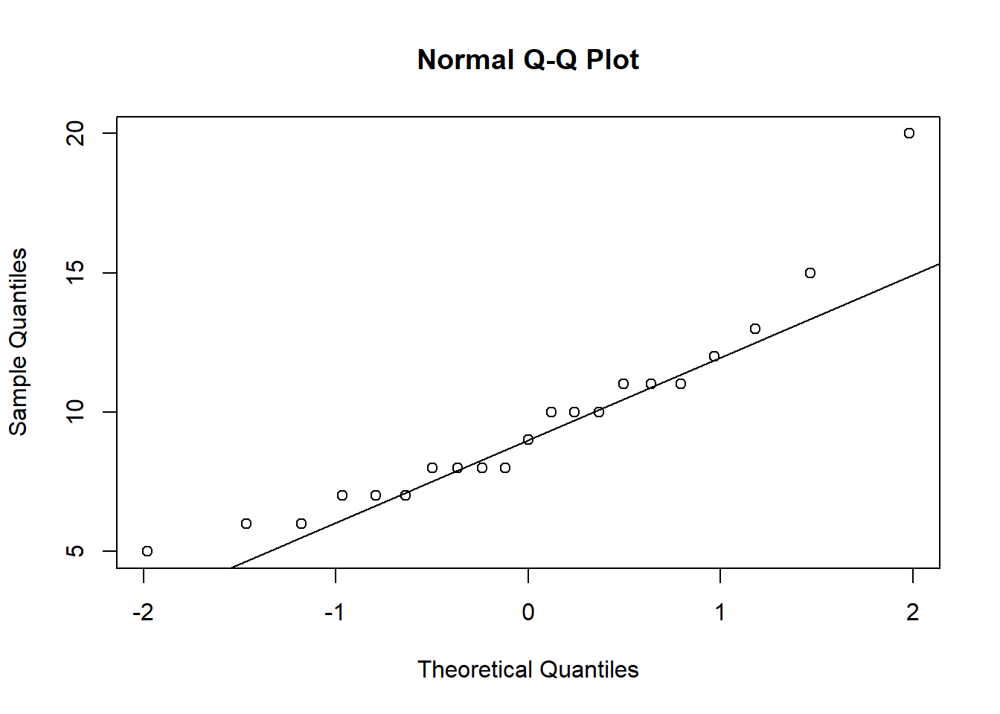
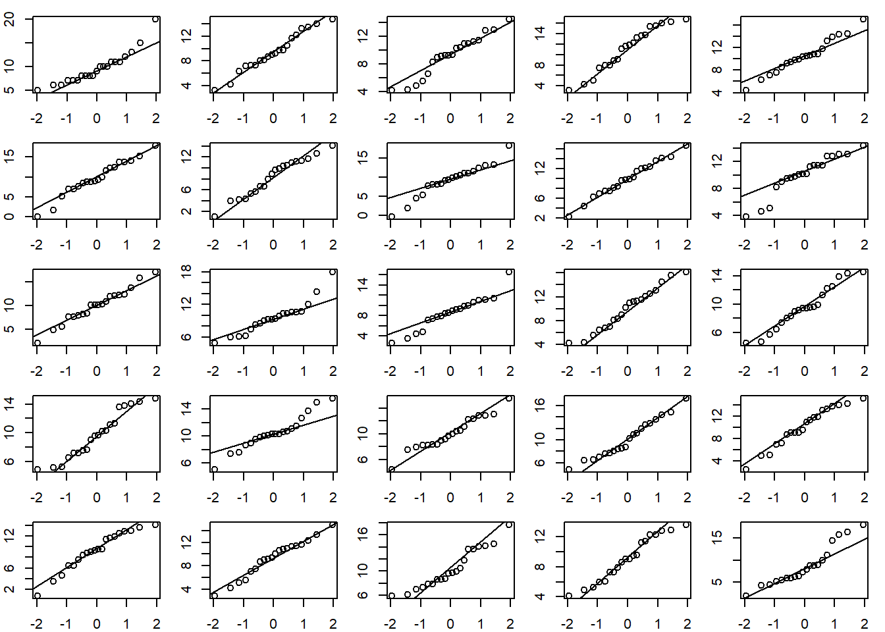
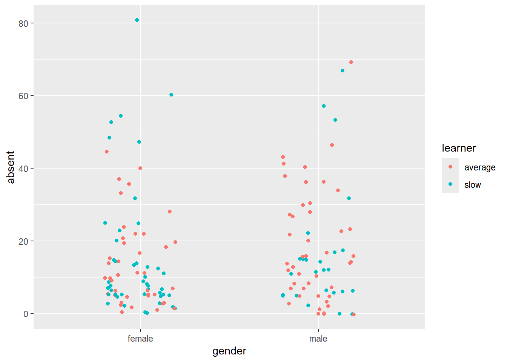
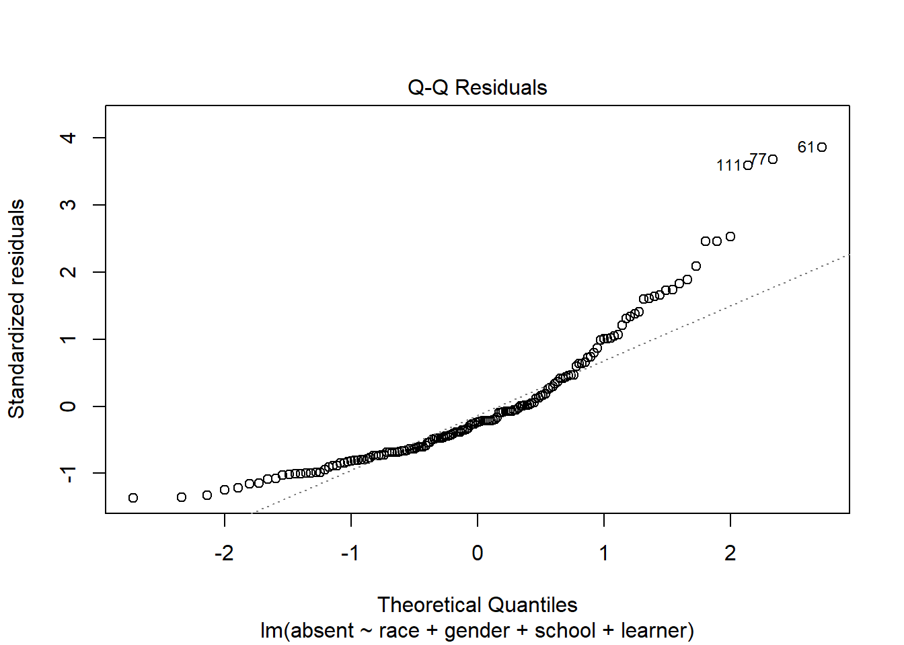
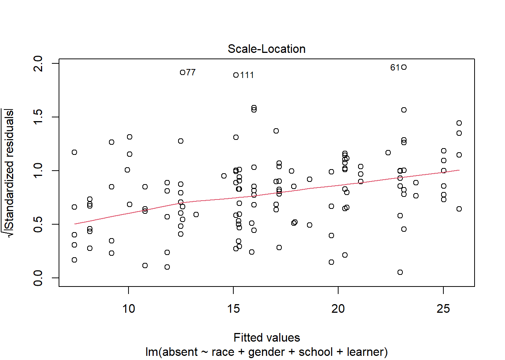
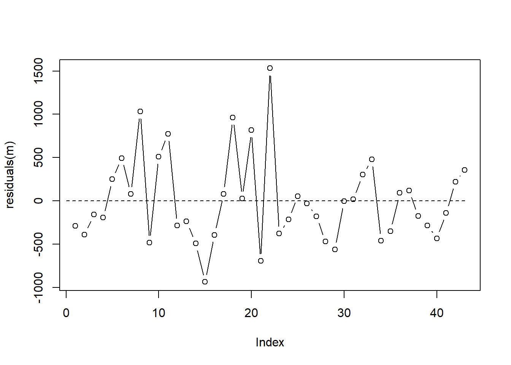

Linear Modeling
Linear model with no predictors (intercept only)
A new reading program is being evaluated at an elementary school. A random sample of 20 students were tested to determine reading speed. Speed was measured in minutes. (Ott and Longnecker 2004)
speed <- c(5, 7, 15, 12, 8, 7, 10, 11, 9, 13, 10, 6, 11, 8, 10, 8, 7, 6, 11, 8, 20)Visualize distribution of data:
hist(speed)
Find the mean of speed and a 95% confidence interval on the mean.
t.test(speed)##
## One Sample t-test
##
## data: speed
## t = 12.753, df = 20, p-value = 4.606e-11
## alternative hypothesis: true mean is not equal to 0
## 95 percent confidence interval:
## 8.045653 11.192442
## sample estimates:
## mean of x
## 9.619048To get just the confidence interval:
tout <- t.test(speed)
tout$conf.int## [1] 8.045653 11.192442
## attr(,"conf.level")
## [1] 0.95This can also be found using an intercept-only linear model:
m <- lm(speed ~ 1)
confint(m)## 2.5 % 97.5 %
## (Intercept) 8.045653 11.19244Does the sample appear to be from a Normal distribution? If so, the points in a QQ Plot should lie close to the diagonal line. See this article for information on QQ Plots. This plot looks ok.
qqnorm(speed)
qqline(speed)
Using the model output:
plot(m, which = 2)
A couple of observations seem unusual: 1, 3, 21
speed[c(1, 3, 21)]## [1] 5 15 20There was a fast reader and a couple of slower readers.
If a Normal QQ Plot if your data looks suspect, try comparing it to other Normal QQ plots created with Normal data. Below we calculate the mean and standard deviation of our data, re-draw the original QQ Plot, and then generate 24 additional QQ plots from a Normal distribution with the same mean and standard deviation as our data. The QQ Plot of our observed data doesn’t seem too different from the QQ Plots of Normal data.
m <- mean(speed)
s <- sd(speed)
op <- par(mar = c(2,2,1,1), mfrow = c(5,5))
qqnorm(speed, xlab = "", ylab = "", main = "")
qqline(speed)
for(i in 1:24){
d <- rnorm(20, mean = m, sd = s)
qqnorm(d, xlab = "", ylab = "", main = "")
qqline(d)
}
par(op)Linear model with categorical predictors
The schooldays data frame from the HSAUR3 package has
154 rows and 5 columns. It contains data from a sociological study of
Australian Aboriginal and white children. Model absent
(number of days absent during school year) as a function of
race, gender, school (school
type), and learner (average or slow learner). (Hothorn and Everitt 2022)
library(HSAUR3)
data("schooldays")First we summarize and explore the data.
# plots to look at data
library(ggplot2)
library(dplyr)
# histogram of absences
hist(schooldays$absent)
# base r strip chart of absences by gender
stripchart(absent ~ gender, data = schooldays,
ylab = 'number of absences', xlab = 'gender',
main = 'Stripchart of Absences by gender')# ggplot strip chart of absences by gender
ggplot(schooldays, aes(x = gender, y = absent, color=learner)) +
geom_jitter(position = position_jitter(0.2))
Next we model absent as a function of all other
predictors.
m <- lm(absent ~ race + gender + school + learner, schooldays)
summary(m)##
## Call:
## lm(formula = absent ~ race + gender + school + learner, data = schooldays)
##
## Residuals:
## Min 1Q Median 3Q Max
## -20.383 -10.252 -3.560 6.232 57.877
##
## Coefficients:
## Estimate Std. Error t value Pr(>|t|)
## (Intercept) 17.0323 3.7353 4.560 1.07e-05 ***
## racenon-aboriginal -7.8280 2.4836 -3.152 0.00197 **
## gendermale 2.6356 2.5596 1.030 0.30484
## schoolF1 -1.7803 3.8597 -0.461 0.64530
## schoolF2 5.3509 3.9365 1.359 0.17612
## schoolF3 3.2898 3.8428 0.856 0.39334
## learnerslow 0.7393 2.7243 0.271 0.78648
## ---
## Signif. codes: 0 '***' 0.001 '**' 0.01 '*' 0.05 '.' 0.1 ' ' 1
##
## Residual standard error: 15.32 on 147 degrees of freedom
## Multiple R-squared: 0.1091, Adjusted R-squared: 0.07276
## F-statistic: 3.001 on 6 and 147 DF, p-value: 0.00853In the first section we would like to see Residuals centered around 0, with the min/max and 1Q/3Q having roughly the same absolute value. This indicates a uniform scatter of residuals, which is what a linear model assumes.
- Positive residuals occur when observed response values are greater than predicted response values.
- Negative residuals occur when observed response values are less than predicted response values.
Residuals do not seem uniformly scatter based on these summary statistics.
The Coefficients section shows the fitted model in the Estimate column. A mathematical expression of the model is as follows:
\[\text{absent} = 17.03 + -7.83\text{ non-aboriginal} + 2.64\text{ male} + -1.78\text{ F1} + 5.35\text{ F2} + 3.29\text{ F3} + 0.74\text{ slow learner}\]
For example, we might use our model to predict expected number of days absent for non-aboriginal females in an F1 school who are average learners.
\[\text{absent} = 17.03 + -7.83(1) + 2.64(0) + -1.78(1) + 5.35(0) + 3.28(0) + 0.74(0)\]
Notice we plug in 1 if our subject belongs to the category and 0
otherwise. We can carry out this prediction using the
predict() function. The input values need to be entered in
a data frame using the same variable names and category levels as our
analysis data set.
predict(m, newdata = data.frame(race = "non-aboriginal",
gender = "female",
school = "F1",
learner = "average"))## 1
## 7.423977Our model predicts about 7 days absence. Adding
interval = "confidence" to predict() reports a
95% confidence interval on this prediction.
predict(m, newdata = data.frame(race = "non-aboriginal",
gender = "female",
school = "F1",
learner = "average"),
interval = "confidence")## fit lwr upr
## 1 7.423977 1.144474 13.70348The estimate is rather wide, ranging from 1 day to 14 days.
The “Std. Error” column in the summary output quantifies uncertainty
in the estimated coefficients. The “t value” column is the ratio of the
estimated coefficient to the standard error. Ratios larger than 2 or 3
in absolute value give us confidence in the direction of the
coefficient. Other than the intercept, the only coefficient that we’re
confident about is the race coefficient. It appears
non-aboriginal students have a lower rate of absence by
about 7 days.
The “Pr(>|t|)” column reports p-values for hypothesis tests for each t value. The null hypothesis is the t value is 0. The reported p-value is the probability of seeing a t value that large or larger in magnitude if the null is true. In all seven hypothesis tests are reported. Two appear to be “significant” in the sense their p-values fall below traditional thresholds.
The “Residual standard error” is the expected amount a predicted response value will differ from its observed value. The reported value of 15.32 tells us the model’s predicted value for days absent will be off by about 15 days.
The Multiple and Adjusted R-squareds are 0.10 and 0.07. This summarizes the proportion of variability explained by the model. Of the variability in days absent, it looks like this model explains about 7% of the variance. The Adjusted R-squared is adjusted for the number of predictors and is the preferred statistic of the two. (Multiple R-squared always increases when variables are added to a model, even variables unrelated to the response.)
The F-statistic tests the null hypothesis that all coefficients (other than the intercept) are 0. Small p-values provide evidence against this hypothesis.
R provides some built-in diagnostic plots. A good one to inspect is the Residuals vs Fitted plot.
plot(m, which = 1)
Residuals above 0 are instances where the observed values are larger than the predicted values. It seems our model is under-predicting absences to a greater degree than over-predicting absences. The labeled points of 77, 111, and 61 are the rows of the data set with the largest residuals. These data points may be worth investigating. For example, point 111 is a child that we predict would be absent about 15 days (on the x-axis), but the residual of about 50 (on the y-axis) tells us this student was absent about 65 days.
A QQ Plot can help us assess the Normality assumption of the residuals.
plot(m, which = 2)
We would like the points to fall along the diagonal line. This plot doesn’t look great. Since our model doesn’t seem to be very good based on the previous plot, it’s probably not worth worrying too much about the QQ Plot.
Another version of the Residuals vs Fitted plot is the Scale-Location plot.
plot(m, which = 3)
In this plot the residuals are standardized and strictly positive. We would like the smooth red line to trend straight. The fact it’s trending up provides some evidence that our residuals are getting larger as our fitted values get larger. This could mean a violation of the constant variance assumption.
One final plot to inspect is the Residuals vs Leverage plot. This can help us see if any data points are influencing the model.
plot(m, which = 5)The x-axis is Leverage, also called hat-values. Higher values of leverage mean a higher potential to influence a model. The y-axis shows standardized residuals. Also plotted is Cook’s distance contour lines if any points exceed a particular threshold. Like leverage, Cook’s distance also quantifies the influence of a data point. In this plot it doesn’t appear any points are unduly influencing the model.
Conclusion: it looks like the number of days absent cannot be properly modeled or understood with these categorical predictors.
Linear model with categorical and numeric predictors
The bp.obese data frame from the ISwR package has 102
rows and 3 columns. It contains data from a random sample of
Mexican-American adults in a small California town. Analyze blood
pressure (bp) as a function of obesity (obese)
and gender (sex). Here obese is a ratio of
actual weight to ideal weight from New York Metropolitan Life Tables.
(Dalgaard 2020)
library(ISwR)
data("bp.obese")First, we will look at summary statistics of the data.
summary(bp.obese)## sex obese bp
## Min. :0.0000 Min. :0.810 Min. : 94.0
## 1st Qu.:0.0000 1st Qu.:1.143 1st Qu.:116.0
## Median :1.0000 Median :1.285 Median :124.0
## Mean :0.5686 Mean :1.313 Mean :127.0
## 3rd Qu.:1.0000 3rd Qu.:1.430 3rd Qu.:137.5
## Max. :1.0000 Max. :2.390 Max. :208.0Next, we will visualize the distribution of blood pressure, totally and by sex.
library(ggplot2)
ggplot(bp.obese, aes(x = bp)) +
geom_histogram()ggplot(bp.obese, aes(x = bp, fill = as.factor(sex))) +
geom_histogram() +
labs(fill='sex') +
scale_fill_manual(values = c('blue', 'red'),
labels=c('men','women'))
Next, we will plot the relationship between the bp and obese variables.
ggplot(bp.obese, aes(x = obese, y = bp)) +
geom_point()Finally, we model bp as a function of obese and sex.
m3 <- lm(bp ~ obese + sex, bp.obese)
m3##
## Call:
## lm(formula = bp ~ obese + sex, data = bp.obese)
##
## Coefficients:
## (Intercept) obese sex
## 93.29 29.04 -7.73m3$coefficients## (Intercept) obese sex
## 93.286875 29.038216 -7.730165confint(m3)## 2.5 % 97.5 %
## (Intercept) 75.55321 111.0205442
## obese 14.80766 43.2687683
## sex -15.10225 -0.3580819Linear model with time ordered data
The heating equipment data set from Applied Linear Statistical
Models (5th Ed) (Kutner 2005)
contains data on heating equipment orders over a span of four years. The
data are listed in time order. Develop a reasonable predictor model for
orders. Determine whether or not autocorrelation is
present. If so, revise model as needed.
heating <- readRDS("data/heating.rds")
names(heating)## [1] "orders" "int_rate" "new_homes" "discount" "inventories"
## [6] "sell_through" "temp_dev" "year" "month"The variables are as follows:
orders: number orders during monthint_rate: prime interest rate in effect during monthnew_homes: number of new homes built and for sale during monthdiscount: percent discount offered to distributors during monthinventories: distributor inventories during monthsell_through: number of units sold by distributor to contractors in previous monthtemp_dev: difference in avg temperature for month and 30-year avg for that monthyear: year (1999, 2000, 2001, 2002)month: month (1 - 12)
First we look at the distribution of orders.
hist(heating$orders)
We had negative orders one month and zero orders a couple of months
summary(heating$orders)## Min. 1st Qu. Median Mean 3rd Qu. Max.
## -5.0 262.5 754.0 937.4 1167.0 5105.0head(sort(heating$orders))## [1] -5 0 0 8 12 34Let’s review summaries of potential predictors. Discounts are almost always 0.
summary(heating[,2:7])## int_rate new_homes discount inventories
## Min. :0.04750 Min. :59.00 Min. :0.0000 Min. :1151
## 1st Qu.:0.06250 1st Qu.:63.00 1st Qu.:0.0000 1st Qu.:1796
## Median :0.07500 Median :65.00 Median :0.0000 Median :2422
## Mean :0.07448 Mean :65.53 Mean :0.3721 Mean :3052
## 3rd Qu.:0.08750 3rd Qu.:68.00 3rd Qu.:0.0000 3rd Qu.:4018
## Max. :0.09500 Max. :72.00 Max. :5.0000 Max. :7142
## sell_through temp_dev
## Min. : 538.0 Min. :0.020
## 1st Qu.: 724.0 1st Qu.:0.445
## Median : 832.0 Median :0.860
## Mean : 926.1 Mean :1.190
## 3rd Qu.:1002.5 3rd Qu.:2.130
## Max. :2388.0 Max. :3.420Tabling up discounts shows there were only 5 occasions when a discount was not 0.
table(heating$discount)##
## 0 1 2 3 5
## 38 1 1 1 2Pairwise scatterplots again reveal that discount is mostly 0. But when greater than 0, it appears to be associated with higher orders.
pairs(heating[,1:7], lower.panel = NULL)
Since the data is in time order, we can plot orders
against its index to investigate any trends in time. There appears to be
an upward trend in the first 9 months. After that orders seem rather
sporadic.
plot(heating$orders, type = "b")
The acf() function allows us to formally check for
autocorrelation (ie, self-correlation). At lag 0, we see
orders is perfectly correlated with itself. That will
always be the case for any variable. Of interest is autocorrelation at
lag 1 and beyond. The area between the horizontal dashed lines is where
we would expect to see random autocorrelation values hover for pure
noise (ie, data with no autocorrelation). Other than at lag 5, we so no
evidence for autocorrelation. And even there it appears rather weak.
acf(heating$orders)
With only 43 observations and little knowledge of this industry, we
decide to pursue a simple model with no interactions or non-linear
effects. To help us decide which predictors to use, will use a bootstrap
procedure to investigate the variability of model selection under the
stepAIC() function from the MASS package (Venables and Ripley 2002), which performs
stepwise model selection by AIC. The bootStepAIC() function
from the package of the same name allows us to easily implement this
procedure. (Rizopoulos 2022)
First we fit a “full” model with all predictors we would like to entertain, with the exception of year and month.
m <- lm(orders ~ . - year - month, data = heating)Then we bootstrap the stepAIC() function 999 times and
investigate which variables appear to be selected most often.
library(bootStepAIC)
b.out <- boot.stepAIC(m, heating, B = 999)The Covariates element of the BootStep object shows three predictors
being selected most often: sell_through,
discount, and inventories
b.out$Covariates## (%)
## sell_through 96.19620
## discount 94.99499
## inventories 84.18418
## int_rate 42.34234
## new_homes 28.22823
## temp_dev 21.12112The Sign element of the BootStep object shows that
sell_through had a positive coefficient 100% of the time,
while discount had a positive coefficient about 99.9% of
the time. The sign of the coefficient for inventories was
negative about 99.5% of the time.
b.out$Sign## + (%) - (%)
## sell_through 100.0000000 0.0000000
## discount 99.8946259 0.1053741
## int_rate 93.8534279 6.1465721
## new_homes 92.5531915 7.4468085
## temp_dev 20.3791469 79.6208531
## inventories 0.4756243 99.5243757Let’s proceed with these three predictors in a simple additive model.
m <- lm(orders ~ discount + inventories + sell_through, data = heating)
summary(m)##
## Call:
## lm(formula = orders ~ discount + inventories + sell_through,
## data = heating)
##
## Residuals:
## Min 1Q Median 3Q Max
## -934.5 -364.4 -138.4 236.0 1531.2
##
## Coefficients:
## Estimate Std. Error t value Pr(>|t|)
## (Intercept) 371.89514 244.83077 1.519 0.13683
## discount 643.11308 71.31200 9.018 4.39e-11 ***
## inventories -0.11845 0.04962 -2.387 0.02192 *
## sell_through 0.74260 0.22357 3.322 0.00195 **
## ---
## Signif. codes: 0 '***' 0.001 '**' 0.01 '*' 0.05 '.' 0.1 ' ' 1
##
## Residual standard error: 519.9 on 39 degrees of freedom
## Multiple R-squared: 0.7599, Adjusted R-squared: 0.7414
## F-statistic: 41.14 on 3 and 39 DF, p-value: 3.694e-12Before we get too invested in the model output, we investigate the residuals for autocorrelation since our data is in time order. One (subjective) way to do that is to plot residuals over time. Since our data is already in time order, we can just plot residuals versus its index. We’re looking to see if residuals are consistently above or below 0 for extended times. It appears we may have some instances of this phenomenon but nothing too severe.
plot(residuals(m), type = "b")
segments(x0 = 0, y0 = 0, x1 = 43, y1 = 0, lty = 2)
A test for autocorrelation is the Durbin-Watson Test. The car package (Fox and Weisberg 2019) provides a function for this test. The null hypothesis is the autocorrelation parameter, \(\rho\), is 0. Rejecting this test with a small p-value may provide evidence of serious autocorrelation. The test result below fails to provide good evidence against the null.
library(car)
durbinWatsonTest(m)## lag Autocorrelation D-W Statistic p-value
## 1 -0.05006007 2.079992 0.942
## Alternative hypothesis: rho != 0Based on our residual versus time plot and the result of the Durbin-Watson test, we decide to assume our residual errors are independent.
Our Residuals versus Fitted plot shows a couple of observations (22 and 18) that the model massively under-predicts. Observation 18, for example, has a fitted value of over 4000, but its residual is about 1000, indicating the model under-predicted its order value by about 1000 units.
plot(m, which = 1)
The Residuals versus Leverage plot indicates that observation 18 may be exerting a strong influence on the model.
plot(m, which = 5)
The “18” label allows us to easily investigate this observation. It appears this is one of the rare times there was a discount. And at 5%, this is the largest observed discount.
heating[18, c("orders", "discount", "inventories", "sell_through")]## orders discount inventories sell_through
## 18 5105 5 2089 1078We can assess how our model changes by re-fitting without observation 18.
m2 <- update(m, subset = -18)The compareCoefs() function from the car package makes
it easy to compare model coefficients side-by-side. It doesn’t appear to
change the substance of the results and we elect to keep the observation
moving forward.
compareCoefs(m, m2)## Calls:
## 1: lm(formula = orders ~ discount + inventories + sell_through, data =
## heating)
## 2: lm(formula = orders ~ discount + inventories + sell_through, data =
## heating, subset = -18)
##
## Model 1 Model 2
## (Intercept) 372 282
## SE 245 231
##
## discount 643.1 505.7
## SE 71.3 85.2
##
## inventories -0.1185 -0.1071
## SE 0.0496 0.0466
##
## sell_through 0.743 0.816
## SE 0.224 0.211
## Computing confidence intervals on the coefficients can help with interpretation. It appears every additional one percentage point discount could boost orders by about 500 units, perhaps as much as 750 or higher. Of course with only 5 instances of discounts being used, this is far from a sure thing, especially for forecasting future orders.
The inventories coefficient is very small. One reason
for that is because it’s on the scale of single units. Multiplying by
100 yields a CI of [-21, -1]. This suggests every additional 100 units
in stock may slightly decrease orders. Same with the
sell_through coefficient. If we multiple by 100 we get a CI
of [29, 119]. Every 100 number units sold the previous month suggests an
increase of a few dozen orders.
confint(m)## 2.5 % 97.5 %
## (Intercept) -123.3218428 867.11212629
## discount 498.8709468 787.35521450
## inventories -0.2188203 -0.01808456
## sell_through 0.2903863 1.19480804We can use our model to make a prediction. What’s the expected mean
number of orders with inventories at 2500 and
sell_through at 900, assuming a 1% discount?
predict(m, newdata = data.frame(inventories = 2500,
sell_through = 900,
discount = 1),
interval = "confidence")## fit lwr upr
## 1 1387.215 1194.674 1579.755Based on the confidence interval, a conservative estimate would be about 1300 orders.